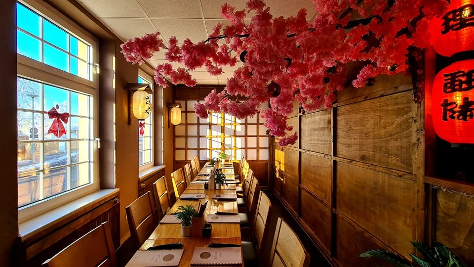
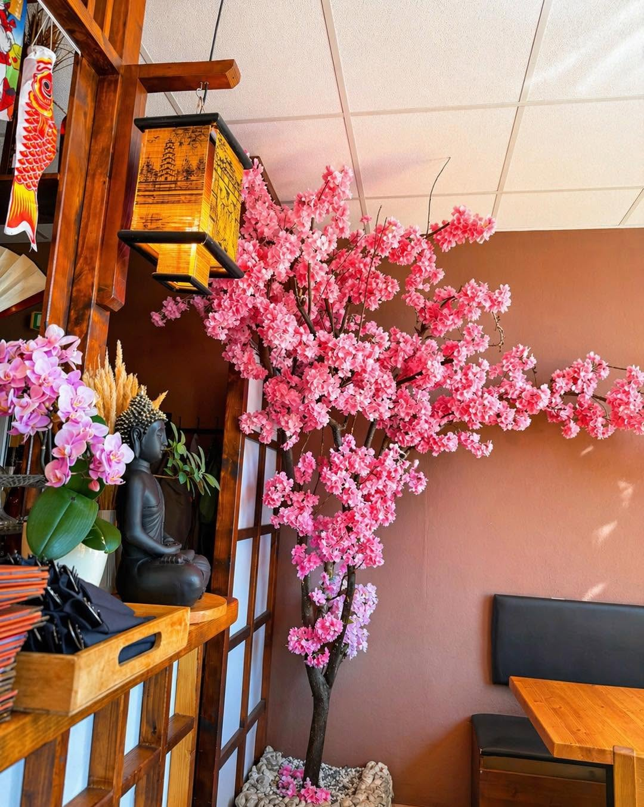

SUSHI
Rolls & Variationen
Frisch gerollt und vielfältig angerichtet.
FRISCH. AUTHENTISCH. BESONDERS.
Genieße unsere asiatische Küche wann und wo du willst – frisch zubereitet, mit Liebe zum Detail.
☎ Telefonisch bestellenFrisch gerollt und vielfältig angerichtet.
Würzig, frisch und voller Geschmack.
Wenn gutes Essen zum Erlebnis wird.
Besonders angerichtet – perfekt zum Teilen.
Nigiri, Maki und mehr.

Ein Ort, an dem asiatische Küche auf moderne Gastfreundschaft trifft. Warme Holztöne, Laternen, Kirschblüten und eine besondere Atmosphäre machen den Besuch zu mehr als nur einem Essen.
„Bestes asiatisches Restaurant außerhalb Asiens.“Gaststimme
„Sehr leckeres Essen und sehr nette Bedienung. Kommen gerne wieder!“Gaststimme
„Leckeres Sushi, super angerichtet. Ich komme gerne wieder.“Gaststimme
„Super Preis-Leistungs-Verhältnis und romantische Atmosphäre.“Gaststimme
